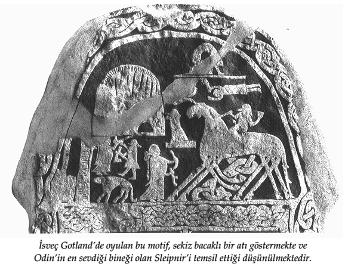

'İskandinavlar' sözcüğünü duyduklarında, İngilizlerin aklına hemen, MS 800 ile 1100 yılları arasındaki üç yüz yıllık süre zarfında dört bir yanı fethetmiş, sömürgeleştirmiş, yağmalamış, ticaretle uğraşmış ve hatta kimileyin İskandinavya'nın doğusunda ve batısında yerleşim yerleri kurmuş olan gözü pek ve acımasız Viking halkı gelir. Bu insanların pagan bir dinleri ve epey karmaşık bir pagan mitolojileri olduğu konusunda hiçbir kuşku yoktur. Fakat bu din ve ona eşlik eden mitlerle ilgili öğelerin ne kadarının gün ışığına çıkarılabileceği pek açık değildir. Zira Vikingler pek okuryazar insanlar değillerdi ve arkalarında bıraktıkları yazıtları saymazsak, inançlarının ancak bir kısmını, mitlerinin ise pek azını kayda geçirmişlerdir. Bugün Vikingler hakkında sahip olduğumuz bütün bilgiler ya Viking çağından ya da Viking sonrası çağlardan kalmadırlar. Viking çağından kalma bilgilerimiz, İskandinavya'nın dışındaki kaynaklardan gelmektedir. Viking sonrası çağlardan kalma bilgilerimiz ise İskandinavya kaynaklıdır. İskandinavya dışındaki kaynaklar, Vikinglerin düşüncelerine, inançlarına ve göreneklerine sıcak bakmayan Hıristiyanlar tarafından kaleme alınmıştır ve bu yüzden, sayıları oldukça azdır. Daha sonraki dönemlerde İskandinavya'da bulunan yazılar ise belki gerçekten de doğrudan Viking kaynaklara dayanıyor olabilir; ama bu yazıların ne ölçüde tam ve doğru bilgi verdikleri hakkında kesin bir şey söylemek mümkün değildir, zira bu yazılarda kullanılan üslup ve ifadeler genellikle Avrupalıların ve Hıristiyanların ortak düşünüş ve yazım tarzlarından etkilenmiştir. [S.15]
Hıristiyanlığın İskandinav kıtasında resmî din haline gelmesi, görece yakın bir tarihe rastlar. Bu yeni dine karşı güçlü ve kararlı bir yönelim, 10. yüzyılın ortalarında ilk kez Danimarka'da başlamıştır. Norveç'te Hıristiyanlık, 10. yüzyılın sonu ile 11. yüzyılın ilk yarısında benimsenmeye başlanmıştır. İsveç, bu kervana biraz daha geç katılmıştır. İzlandalılar ise, kendi Ortaçağ tarihçilerine bakılacak olursa, Hıristiyanlığı aşağı yukarı 1000 yılında benimsemişlerdir. Başka bölgelerde bulunan Viking sömürgelerinde Hıristiyanlık daha önceki tarihlerde benimsenmiş olsa bile, Batı Avrupa'yla kıyaslandığında, onların da bu kervana geç katıldıkları söylenebilir. İskandinavya'dan Batı İngiltere'ye göç etmiş olanlar, MS 870 yılında bizzat şehit ettikleri Kral Edmund'un Hıristiyanlığa göre azizlik mertebesine nail olmasını kutlamak amacıyla, bu olaydan yirmi yıl sonra onun adına para bastırmışlardır. Man Adası'nda yaşayan sömürgecilerin daha 10. yüzyılda haç şeklinde mezar taşları diktikleri ve yerli Hıristiyan Kelt halkla evlilikler yaptıkları da bilinmektedir.
Hiç kuşkusuz, Hıristiyanlığın İskandinavların davranışlarında ya da inançlarında köklü birtakım değişiklikler meydana getirmiş olduğu varsayımıyla hareket etmek zorunda değiliz. Bildiğimiz kadarıyla, o dönemlerde İrlanda'da yaşayan bir İskandinav'ın aynı anda hem İsa'ya hem de Thor'a inanıyor olması pekâlâ mümkündü. Hıristiyanlığın mitleri, İskandinav mitlerinin yerini almaktan ziyade, onlara bir şekilde eklenmiş ya da yedirilmiş de olabilir. Sözgelimi, Cumbria'daki Gosforth kilise mezarlığında bulunan 11. yüzyıldan kalma görkemli bir haçın üzerinde, çarmıha gerilme sahnesinin tasvir edildiği oymalar bulunmaktadır. [S.16] Ama aynı mezarlıkta, İskandinav tanrıları hakkındaki mitleri tasvir ettikleri düşünülen başka heykeller de vardır. Bu konuda başka bir örnek de, Man Adası'ndaki Andreas'ta bulunan ve üzerinde haç şekli olan bir mezar taşıdır. Bu mezar taşı üzerinde, bir hayvan tarafından söz konusu haçın kollarının birinin altında vahşice saldırıya uğrayan mızraklı bir sima tasvir edilmektedir ve genel kanı, bu simanın, korkunç kurt Fenrir'in saldırısına uğrayan tanrı Odin olduğu yönündedir.
[S.17]
Şu halde, İskandinav mitlerinin Viking çağından kalma özgün kayıtlarına ulaşmak istiyorsak, metinlere değil, oymalara ya da Vikinglerin yaşadıkları yerlerde bulunan ve çekiç taşıyan tanrı Thor hakkındaki öykülerin o günlerde oldukça revaçta olduğuna işaret eden minyatür çekiç başı şeklindeki muskalara veya tam olarak ne oldukları kuşkulu olan ama kimileri tarafından tanrıların ıralayıcı özelliklerini yansıttıkları düşünülen, kimileri tarafındansa bir çeşit masaüstü oyununun taşları oldukları ileri sürülen bir dizi heykelciğe başvurmamız gerekmektedir. Ama eğer bu mitlerin çok daha ayrıntılı hallerini öğrenmek istiyorsak, geçen zamanla birlikte mitlerde ortaya çıkabilecek tahrifatlar ve tutarsızlıklarla uğraşmayı göze alıp Viking sonrası çağdan, yani Ortaçağ İskandinavyasından kalma kaynaklara başvurmak zorundayız.
Kolye olarak kullanılan, Thor'un çekici şeklinde bir tılsım. Romersdal, Danimarka'dan. 1[S.18]
Nazım Edda
İskandinav mitleri hakkındaki bilgimiz, başlıca üç kaynağa dayanmaktadır. Bunlardan ilki, birbiriyle bağlantılı ama dağınık metinlerden ve kısa ya da orta uzunluktaki şiirlerden oluşan Nazım Edda'dır. Bu derlemenin kalbini, 'Kraliyet Elyazması' anlamına gelen Codex Regius oluşturmaktadır. Bu şekilde adlandırılmış olmasının sebebi, bu elyazmasının, Danimarka ve İzlanda hükümetleri arasında 1971 yılında varılan bir anlaşma gereği anayurduna geri götürülmeden önce, yüzyıllar boyu Kopenhag'daki Kraliyet Kütüphanesi'nin hazinelerinden biri olarak kalmış olmasıdır. Codex Regius, İzlanda'nın Hıristiyanlığı resmî din olarak kabul etmesinden yaklaşık olarak üç yüzyıl sonra, 13. yüzyılın ikinci yarısında kaleme alınmış bir tirşe elyazmasıdır. Bu elyazması, on bir tanesi mitolojik konuları ele alan, on altı tanesi ise nesir tarzındaki iki ek metinle birlikte Germen eskiçağının erkek ve kadın kahramanları hakkında yazılmış olan, toplam yirmi dokuz şiir içermektedir. Benzer biçim ve içeriğe sahip birkaç şiiri barındıran başka elyazmaları da bulunmakla birlikte, nesir tarzında kaleme alınmış mevcut metinlerde karşımıza çıkan şiir alıntıları, elimizde bulunanlardan çok daha fazlasının bugün kayıp olduğuna işaret etmektedir. Sonuçta, elimizdeki kalıntıların aslında son derece geniş bir şiir külliyatının varlığını koruyabilmiş rastgele bir bölümü olabileceği ve elimizdeki kalıntılardan hareketle birtakım sonuçlara varmaya çalışırken bu gerçeği göz ardı etmememiz gerektiği unutulmamalıdır.
Dahası, Codex Regius'un nerede ve ne zaman kaleme alınmış olduğunu söylemek nispeten kolay olsa da, Edda şiirlerinin kendilerinin nerede ve ne zaman yaratılmış olduklarını belirlemek son derece güç, hatta belki de imkânsızdır. Codex Regius, farklı tarihlerde ve farklı yerlerde yaratılmış çalışmaları bir araya toplamaktadır. [S.19] Bu şiirlerin kimisi Viking çağının ilk yıllarından, kimisi ise İskandinav uygarlığının Avrupa'nın Ortaçağına dâhil olduğu 12. yüzyıl gibi nispeten yakın bir tarihten kalmadır. Kimisi Norveç'ten, kimisi ise daha batıdaki İrlanda ya da Grönland gibi diğer yerleşim yerlerinden gelmektedir.
Edda şiirleri, pek fazla vezin değişikliği göstermedikleri ve genellikle dörtlüklerden oluştukları için, türdeş bir görünüm sergilerler. Yine de mitleri anlatan Edda şiirleri, hem içerik hem de üslup bakımından birbirinden oldukça farklı olabilmektedir. Kimisi, tanrıların serüvenlerini anlatmak amacıyla, sahnelerin birbiri ardına hızla değiştiği ve araya konuşmaların serpiştirildiği bir anlatım kullanır ve balad tarzındadır. Kimisi ise mitolojik bilgileri dinleyiciye aktarmak amacıyla doğaüstü varlıklar arasında geçen konuşmaları kullanır ve soru cevap tarzındadır. Bazen de, tanrılardan birine atfedilen bir atasözünün ya da özdeyişin yer aldığı bir dizi dörtlük şeklinde karşımıza çıkabilmektedirler. Bütün bunlar, İskandinavların kendi tanrılarını nasıl tasvir ettikleri hakkında bize bir ipucu vermekle birlikte, bu şiirlerde genellikle anıştırmalara dayalı bir anlatım tarzı kullanılmış olmasından ötürü, dinleyicinin yapılan göndermeleri aydınlatabilmesi için öncelikle donanımlı olması ve sahip olduğu bilgileri kullanması gerekmektedir.
Nazım Edda'da yer alan en yalın öyküsel şiirlerden biri olan Þrymskviða, yani dev kral Thrym'in öyküsü, buna örnek olarak gösterilebilir. Bu şiir, Thor'un yatağında uyanıp kendisine güç ve güven veren kudretli çekicine uzanmasıyla başlar. Çekicin yerinde yeller esmektedir; çekiç çalınmıştır! Onu bir an önce bulması gerekmektedir, yoksa devler, tanrılar diyarını istila edip bütün tanrıları yok edeceklerdir. O ve kişilik özellikleri arsızlık ve haylazlıktan şeytaniliğe kadar değişen yoldaşı Loki, bu duruma çare aramaya koyulurlar ve nihayet çareyi güzeller güzeli Tanrıça Freyia'dan yardım istemekte bulurlar. Freyia'dan, giyenin uçabilmesine izin veren kuş kıyafetini ödünç vermesini isterler; [S.20]
İzlanda'dan gümüş bir kolye. Hayvan başı şeklinde bir oymaya sahip olmakla birlikte, İsa'nın haçını ya da Thor'un çekicini tasvir ediyor olması muhtemeldir.1
böylece, içlerinden biri çekici aramak amacıyla dünyanın üzerinde uçabilecektir. Freyia kıyafeti memnuniyetle onlara ödünç verir. Loki kıyafeti giyer ve hiç zaman kaybetmeden Asgard'dan (yani Tanrılar Diyarı'ndan) devler diyarına uçar. Yolda tesadüfen dev Thrym ile karşılaşır. Thrym, çekici Thor'dan nasıl çaldığını anlatıp keyifle böbürlenmekte ve tanrılar kendisine fidye niyetine gelin olarak güzeller güzeli tanrıça Freyia'yı -burada üslubun balad tarzında tekrarlanması söz konusudur- yollamadıkça, çekici asla geri vermeyeceğini anlatmaktadır. Bunu duyan Loki, derhal geri dönüp olan biteni Thor'a anlatır. İki kafadar, Freyia'yı tekrar ziyaret etmeye karar verirler. Durumu tanrıçaya anlatırlar ve Iotunheim'a (yani Devler Diyarı'na), Thrym'a gelin olarak gitmesi gerektiğini, bu yüzden hemen bir gelinlik bulsa iyi olacağını söylerler:
Freyia hiddetle kükredi.
Büyük tanrıların salonu, ayaklarının altında tiredi.
Parıldayan gerdanlığı paramparça oldu.
"Sırf bir adamı baştan çıkarmak için,
Sizinle Iotunheim'a gelecek kadar deli miyim ben!" dedi. [S.21]
Bunun üzerine, tanrılar meclisi derhal toplanır ve içlerinden biri, ileri görüşlü Heimdall, bir öneride bulunur. Thor'un, kadın kılığına bürünüp Freyia'nın yerine geçerek Iotunheim'a gidebileceğini söyler.
O vakit tanrıların en cesuru olan Thor dedi ki:
"Tanrılar benim bir dönme olduğumu düşünecekler,
Bu gelinliği giyersem eğer."
Bütün itirazlarına rağmen, tanrılar ne yapıp edip Thor'u gelinlik giymeye razı ederler ve Loki'yi de gelinin nedimesi kılığına sokup ikiliyi Iotunheim'a gönderirler. Devler, beklenmedik bir şekilde, onları gayet sıcak karşılarlar. Kurt gibi acıkmış olan Thor, düğün şöleni sırasında bir ara kendisini yemek yemeye öylesine kaptırır ki, kurdukları tuzak neredeyse bozulacak olur: Thrym, gelinin doymak bilmez iştahı karşısında dehşete kapılmıştır. Neyse ki kurnaz Loki, Thor'un imdadına zamanında yetişir ve durumu toparlar. Thrym'a, gelinin onun için adeta deli divane olduğunu, bu yüzden yemeden içmeden kesildiğini, günlerdir ağzına bir lokma yiyecek koymadığını söyleyerek, 'Freyia' adına kendisinden özür diler. Evliliğin bir an önce gerçekleşmesi için sabırsızlanan Thrym, daha fazla dayanamaz ve gelini kutsayabilmek için kutsal çekicin derhal getirilmesini emreder. Çekici gördüğü anda, Thor'un kalbi adeta yerinden fırlayacak gibi olur. Thor, ani bir hamleyle, kutsal çekici kaptığı gibi oradaki bütün devleri yere serer. Böylece çekicine kavuşmuş olur.
Bu öykü, İskandinav tanrıları hakkında hiçbir bilgisi olmayan kimselere dahi eğlenceli gelebilecek, mizahi ve kaba bir üslupla anlatılmaktadır. Ama eğer Freyia'nın aslında 'erkek delisi' olarak adı çıkmış bereket, cinsellik ve aşk tanrıçası olduğunu önceden biliyorsanız, 'Freyia'nın hiddeti' size muhtemelen daha da gülünç gelecektir. Ayrıca, İskandinavların ahlak anlayışları hakkında bir şeyler öğrenmeye de izin vermektedir. [S.22] Bu öyküde Thor'un kadın kılığına girme konusunda gösterdiği isteksizlik, özellikle dikkate değerdir. Vikingler, erkekteki kadınsılıktan nefret ederlerdi ve Thor, pek akıllı olmamakla birlikte, son derece erkeksi, güçlü ve kaba saba bir tanrıydı. Dolayısıyla, bu dizelere serpiştirilmiş şakaların ve mizahi öğelerin çokluğu karşısında, akla hemen şu soru gelmektedir: Böylesi dizeleri ne tür bir şair yazmış olabilir? Aslına bakılacak olursa, bu dizelerin yazıldıkları tarihler hakkında, 14. yüzyıldan önce yazılmış oldukları dışında hiçbir şey bilmiyoruz. Acaba bir pagan, bir yandan kendi tanrılarıyla bu şekilde fütursuzca dalga geçerken, diğer yandan onlardan yine de medet umabilir miydi? Yoksa bu şiir, sahte tanrıları aşağılamak isteyen muzip bir Hıristiyan tarafından mı kaleme alınmıştı? Eğer bu şiir muzip bir Hıristiyan tarafından yazıldıysa, kaynağını İskandinav mitolojisinde bulan hakiki mitlere mi dayanmaktadır, yoksa eski inancı hor görüp kötülemek için uydurulmuş bir öyküden mi ibarettir? Bu konudaki tartışmalar hâlen devam etmektedir.
Yine benzer bir şiir, 'Yüce Olanın İlahisi' anlamına gelen Hávamál'dır. Bu şiir, birbirinden kopuk farklı dörtlük dizilerinin aynı başlık altında toplanmasıyla oluşturulmuş, eski tarihli karmaşık bir çalışmadır. Bu dörtlüklerin tam olarak ne zaman derlendikleri tartışmalıdır. Kimi bilginler, bu dörtlüklerin Yüce diye de bilinen tanrı Odin'in kişiliği hakkında bilgiler veren rastgele seçilmiş kadim dizelerden oluştuğuna inanmaktadırlar. Diğerleriyse, bu şiirin muhtemelen 12. yüzyıldan kalma olan ve dönemin bilginlerinin elinden çıkma, gözden geçirilmiş bir derleme olduğunu ileri sürmektedirler. Her halükarda, çoğu bilgin, Hávamál şiirinin kadim Viking çağından kalma önemli malzemeleri bir araya getirdiği konusunda hemfikirdir: Bu şiir, hiç değilse Vikinglerin dünya görüşü hakkında elle tutulur bilgiler verebilmektedir.[S.23]
Şiirin büyük bölümü, atasözleri tarzında kaleme alınmıştır. Bu dünyada hayatımızı idame ettirebilmek için gerçekçi birtakım öğütlere ihtiyaç duyuyorsak, aslında bu oldukça makul bir anlatım tarzıdır. Şiirde dostluğun getirdiği sorumluluklar, sağladığı yararlar, konukseverliğin getirdiği yükümlülükler, uyanık ve tedbirli olmanın gerekliliği, yoksulluk ve beraberinde getirdiği sıkıntılar, kimlere güvenilip kimlere güvenilmeyeceği, iyi niyetliliğin neden gerekli olduğu gibi konular hakkında konuşmalar yer almaktadır; ve bütün bu konular, tam da dünyevi bilgeliğin sırrına mazhar olmuş bir tanrıya yakışır niteliktedir. Ayrıca, bu şiirde ancak bir büyü ve büyücülük tanrısına yaraşır nitelikte tılsımlar ve büyüler de yer almaktadır. Şiirin bazı yerlerinde ise karşımıza kısa öyküler çıkabilmektedir. Ancak bazı dizeler vardır ki, ne anlama geldikleri tam bir muammadır. Loddfafnir adlı meçhul bir kişiye sesleniyor görünen bilgelik hakkındaki bir grup dörtlükten hemen sonra ve Odin olması muhtemel bir simanın yaptığı büyülerin listesinin çıkarıldığı bölümden hemen önce yer alan şu dizeler, buna bir örnek teşkil etmektedir:
Hatırlıyorum asılı kaldığımı rüzgâr alan bir ağaçta,
Hem de tam dokuz gece boyunca.
Mızrak yarasıyla teslim ettim ruhumu Odin'e,
Kendimi, aslında yine kendime.
Köklerinin nerelere uzandığını kimsenin bilmediği,
O ağacın dalları üzerinde.
Ne yiyecek verdiler, ne de bir damla su boynuzdan.
Dikkatle baktım aşağıya, yukarıdan.
Topladım runleri; hem de inleye inleye,
Ve sonra düştüm yine.
Bunlar hakikaten son derece anlaşılmaz dizelerdir. Kuşkusuz, dinleyiciler bu dizelerin bağlamını biliyorlardı[S.24] (elbette, eğer bu dizeler aslında kayıp bir başka şiirin varlığını tesadüfen koruyabilmiş rastgele bir parçasıysa, metnin geri kalanı öykünün ayrıntılarını veriyor da olabilir). Peki, ama neydi bu bağlam? İskandinav edebiyatının hiçbir yerinde bu mitin varlığını günümüze kadar koruyabilmiş başka bir versiyonu olmadığı kanısındayım. Dolayısıyla, geriye seçenek olarak, yalnızca bu mitin içeriği ve bağlamı hakkında tahminler yürütmek kalıyor. Bu mit, sanki Odin'in runlerde yazılı gizli büyüleri öğrenebilmek amacıyla verdiği ve şamanist özellikler sergileyen bir sınavı tasvir ediyormuş gibi görünmektedir. İskandinav kültüründe bu kanıyı destekleyen birtakım kayıtlar bulunmaktadır. Sözgelimi, İsveç'teki büyük Uppsala tapınağında, insanların ve hayvanların kutsal korudaki ağaçlara asılarak kurban edildiklerini biliyoruz. Odin'in lakaplarından birinin 'asılmışların tanrısı' olduğunu, kişisel silahının ise mızrak olduğunu biliyoruz. Ayrıca, Odin'in runik harfler konusunda son derece becerikli olduğunu ve o dönemde bu tuhaf el yazısının doğaüstü güçleri harekete geçirmek için kullanılabileceğine inanıldığını da biliyoruz. Ne var ki, Odin hakkında anlatılagelen ve günümüze dek varlığını koruyabilmiş öyküler arasında, Hávamál şiirinde yer alan bu kısa ve muammalı dizeleri destekleyen hiçbir parça bulunmamaktadır. Dahası, bu öykü, burada anlatıldığı haliyle, çarmıha gerilen, mızrakla yaralanan, susuz bırakılıp işkence edilen ve nihayetinde kendisini gönüllü olarak kurban edip tanrısallığını geri kazanmış olan İsa hakkındaki Hıristiyan mitiyle rahatsız edici birtakım benzerlikler sergilemektedir. Acaba ortak bir kaynaktan türemiş iki mit mi vardı? Yoksa mitlerden biri, diğerinin dünyasını istila mı etmişti?
Üçüncü örneğimizse, 'Loki'nin Atışması' anlamına gelen Lokasenna şiiridir. Loki bu şiirde, tanrılar meclisinden dışlanmış olan günahkâr bir sima olarak tasvir edilmektedir. Tanrılar bir şölen tertip ederler ama Loki'yi davet etmezler. Buna sinirlenen Loki, şölene zorla katılır ve oradaki herkese sataşıp uygunsuz şakalar yapar. [S.25] Loki veya atıştığı rakipleri tarafından söylenen imalı kaba sözlerin her biri, bir dörtlükle ifade edilir. Sözgelimi, tanrı Tyr dostlarını savunmak için duruma müdahale ettiği sırada, Loki ile aralarında şöyle bir atışma yaşanır:
Loki dedi ki:
"Kapa çeneni Tyr. Sen ne zaman muvaffak olabildin ki
İki düşmanı barıştırmaya.
Bırak da şu sağ elinden bahsedeyim senin
Hani Fenrir koparıp atınca kaybettiğin."
Tyr dedi ki:
"Ben bir elimi yitirdim, sen ise Hrodrsvitnir'i.
İkimiz de kaybettiklerimiz için yas tutuyoruz.
Hem kurt da perişan; artık beklemek zorunda
Dünyanın sonuna dek, zincire vurulmuş durumda."
Ben burada Lokasenna şiirinin bu mit hakkında söylediği hemen her şeyi alıntıladım ama o dönemde dinleyicilerin bu miti anlayabilmeleri için önceden bilgi sahibi olmaları gerektiği, yoksa bu dizelerin onlar için de hiçbir anlam ifade etmemiş olacağı unutulmamalıdır. Neyse ki biz öykünün tamamını öğrenebilecek kadar şanslıyız, zira Snorri Sturluson (1179-1241) Nesir Edda adlı kitabında bize bu öykünün daha ayrıntılı bir özetini sunmaktadır. Snorri, tanrı Tyr ile Lokasenna şiirinde Hrodrsvitnir adıyla (ya da lakabıyla) da anılan kurt Fenrir'in karşı karşıya gelişini, iki ayrı parçada anlatır. Snorri, Tyr'ın "tanrıların en cesuru ve gözü pek savaşçıların koruyucusu" olduğunu söyler. Kurt Fenrir, dişi bir devin Loki'den olma canavar çocuklarından birisidir. Tanrılar, kurdun, kardeşleriyle birlik olup günün birinde dünyanın sonunu getireceğine dair bir kehanet işitirler. Bu tehlikeyi bertaraf etmek için derhal harekete geçip kurdu henüz yavruyken yakalarlar. Ama kurdun bakımıyla ilgilenme cesaretini, tanrılardan yalnızca Tyr gösterir.[S.26] Kurt henüz yavruyken her şey yolundadır, ama tüm yavrular gibi o da bir gün büyüyecektir. Tanrılar kurdun büyümeye başladığını fark ettikleri zaman, onu zincire vurmaya karar verirler. Peki, bunu nasıl yapacaklardır? Önce kurdu kandırmaya çalışırlar (bu bağlamda, hile ve kurnazlığın tanrıların ahlak kurallarının bir parçası olması da dikkate değerdir). Zincire vurulmayı sanki bir güç gösterisiymiş gibi sunup zincir ne denli sıkı bağlanırsa onu kırabilmenin getireceği şan şöhretin de o denli büyük olacağını söyleyerek kurdu zincirlenmeye ikna etmeyi başarırlar. Ama işler hiç de tanrıların öngördükleri biçimde gelişmez ve ne kadar sıkı bağlarlarsa bağlasınlar, kurt her seferinde zincirleri kırmayı başarır.
Tanrıların, hünerli zanaatçılar olarak tanınan cücelerden yardım istemekten başka çareleri kalmaz. Cücelerden, sinsice dolaşan bir kedinin ayak sesi, bir kadının sakalı, bir dağın kökü, bir ayının çevikliği, bir balığın nefesi ve bir kuşun tükürüğünden oluşan -ve aslında fiziksel olarak ya hiç var olmayan ya da son derece nadir bulunan- altı öğeyi kullanarak bir zincir yapmalarını isterler. Cüceler ısmarlanan zinciri yapmayı kabul ederler. Tahmin edilebileceği üzere, bu öğeleri kullanıp son derece ince ama bir o kadar da sağlam bir zincir yapmayı başarırlar. Ismarladıkları zinciri teslim alan Tanrılar, hiç zaman kaybetmeden kurdun yanına varırlar. Bir yandan bu yeni zinciri takabilmek için kurdu kandırmaya çalışırlarken, diğer yandan da demir zinciri bile zorlanmadan kırabilen bir hayvanın, bunu da kolayca kırıp kıramayacağı hakkında kendi aralarında tartışmaya başlarlar. Kurt, böylesine ince bir zinciri kırmanın kendisine hiçbir şan şöhret getirmeyeceği ve bu işin altından bir çapanoğlu çıkabileceği gerekçesiyle, zincirle bağlanmayı önce reddeder. Ama sonra, cesaretinden şüphe edileceğinden korkan kurt, zincir takılacağı sırada tanrılardan birinin iyi niyet göstergesi olarak bir elini onun ağzına sokması koşuluyla zincire vurulmaya razı olur. Tanrılar, bu öneri karşısında şaşkınlık içinde birbirlerine bakarlar.[S.27] Önce hiçbiri bu tehlikeli görevi üstlenmek istemez; ama en sonunda, tanrı Tyr elini kurdun ağzına sokmaya razı olur. Böylece, tanrılar hileli zincirle kurdu zincire vurmayı başarırlar. Hileli zincirden kurtulmayı başaramayan kurt, can havliyle Tyr'ın elini ısırıp koparır. "Bunun üzerine hepsi kahkahalara boğuldular; Tyr hariç."
Tanrılar, zincire vurdukları Fenrir'i götürüp bir kayaya bağlarlar. Bir daha kimseyi ısırmasın diye kurdun dişlerinin arasına bir kılıç yerleştirmeyi de ihmal etmezler. Kayaya bağlanan kurt, þar liggr hann til ragnarøkrs, yani "dünyanın sonuna dek orada kalacaktır".
Nesir Edda
Bu öykü üzerinden, İskandinav mitleri hakkındaki ikinci büyük kaynak olan Nesir Edda'ya geçiyoruz. Snorri Sturluson, ülkesinin tarihi ve edebiyatı hakkında son derece engin bir bilgi birikimine sahip İzlandalı zengin bir çiftçi, yerel bir siyasi önder, bir kodaman, bir sefir ve dönemin Norveç kralı Hakon Hakonarson'un hizmetinde çalışan bir casustu. Ayrıca, kendisi de bir şairdi ve Nesir Edda'yı, yeniyetme şairlere yol gösterebilmek amacıyla bir çeşit mitoloji el kitabı olarak, MS 1220 yılında derlemişti.
Nesir Edda, dört bölümden oluşmaktadır: Giriş, Gylfaginning (Gylfi'nin Kandırılması), Skáldskaparmál (Şiir Dili) ve Háttatal (Nazım Biçimleri Listesi). Nesir Edda'nın konumuzla en az ilgili olan bölümü Háttatal'dır ve ilk dönem İskandinav saray şairleri tarafından kullanılmış olan farklı nazım biçimlerine ilişkin açıklamaların ve çeşitli örneklerin yer aldığı bir dizi teknik tanımdan ibarettir. Kitabın ilk üç bölümü ise daha tutarlı bir bütün oluşturmaktadır. Bu bölümlerin yazılma amacı, Skáldskaparmál'da, genç şairlere "şiir dilini öğretmek, geleneksel terimleri kapsayan geniş bir kelime haznesi kazandırmak[S.28] ya da şiirleri takip edebilmeleri için şiirlerde yer alan eğretilemeleri doğru anlamalarını sağlamak" olarak dile getirilmiştir. Bu anlamda Nesir Edda, şiir sanatıyla uğraşmaya yeni başlayan şairlerin şiirlerde karşılaşılan yaygın mitolojik göndermeleri doğru anlayabilmelerine yardımcı olmak amacıyla yazılmış olan, açıklayıcı nitelikte bir kılavuz kitaptır. Zira kitabın hitap ettiği bu 13. yüzyıl şairleri tepeden tırnağa Hıristiyan olsalar bile, dönemin şiirlerinde aşağı yukarı iki yüzyıl önce ölmüş olan pagan bir mitolojiye yapılan göndermeler yine de bulunmaktaydı ve onlara yol gösterecek hiçbir yön işareti olmasa hata yapabilirlerdi.
Diyelim ki şiirinizde altından söz etmeniz gerekiyordu. Bu durumda, altın yerine pekâlâ 'Frodi'nin unu' deyimini kullanabilirdiniz. Ama öyle yaptığınızda, istenilen her şeyi öğütebilen bir el değirmenine sahip olduğu rivayet edilen, Danimarka'nın efsanevi kralı Frodi hakkında önceden bilgi sahibi olmanız işinizi hayli kolaylaştırırdı. Rivayete göre, Frodi servet düşkünü bir kralmış ve köleleri Fenia ile Menia'yı el değirmenini işletip kendisine sürekli altın öğütsünler diye gece gündüz çalıştırırmış. Ya da Danimarka'nın bir başka efsanevi kralı olan ve intikam peşindeki bir düşmanı tarafından kovalandığı sırada kendisine ağırlık yapan altınlarını tıpkı bir çiftçinin tarlaya tohum saçması gibi etrafına saçarak düşmanıyla arasını açmaya çalışmış olduğu rivayet edilen Kraki'ye göndermede bulunup altına 'Kraki'nin tohumu' da diyebilirdiniz. Eğer bu öyküleri iyi bilmiyorduysa-nız, hata yapıp altına yanlışlıkla 'Frodi'nin tohumu' ya da 'Kraki'nin unu' diye göndermede bulunabilirdiniz. Güncel bir örnek vermek gerekirse, geçenlerde radyoda dinlediğim bir sohbet programında, hanım sunucu en verimli çağında kariyerinde köklü bir değişikliğe gitmiş olan ünlü konuğuna "Bu kararı iyice düşünüp taşındıktan sonra mı verdiniz, yoksa tıpkı Emmaus'a giden yolda olduğu gibi aniden ortaya çıkan göz kamaştırıcı bir ışık mı size yol gösterdi?" diye sordu[S.29]. Eğer sunucu hanım Snorri'nin Nesir Edda'sının Hıristiyan nitelikteki çağdaş bir eşdeğerine veya Kitabı Mukaddes'in Resullerin İşleri başlıklı bölümüne önceden göz atmış olsaydı, Emmaus'a giden yol ile Damascus'a* giden yolu herhalde karıştırmazdı.
* Şam şehri. (çev.)
Gelgelelim, Snorri de bir Hıristiyan'dı ve özellikle pagan tanrıların maceralarını anlatan öyküleri çarpıtmadan aktarması ondan beklenemezdi. Buna göre, Snorri ele aldığı konular ile kendi düşünceleri arasına çeşitli yollarla belli bir mesafe koymuştur. Öncelikle, Nesir Edda'ya tamamen ilkel antropolojik gözlemlerle dolu bir giriş yazmıştır. İlk çağlarda insanların evrendeki düzenin farkına nasıl varmış olabilecekleri ve bu düzenin bir yöneticisi olması gerektiği sonucunu nasıl çıkarmış olabilecekleri hakkında kendi fikirlerini ortaya koymuştur. Bugün Türkiye sınırları içerisinde yer alan Truva şehrinin ilk toplumların en görkemlisi olduğunu; bir zamanlar her biri insanüstü niteliklere sahip prensler tarafından yönetilmiş olan ve bu prenslerin hepsinin bağlı oldukları tek bir yüce kralın egemen olduğu on iki krallığa ev sahipliği yapmış olduğunu iddia etmiştir. Bu hanedanlardan birinin veliahdı olan ve "bizim Thor dediğimiz" Tror'un izini sürmüştür. Serüven peşinde yollara düşen Thor, günün birinde "bizim Sif dediğimiz" Sibil adında güzeller güzeli bir cadıyla tanışmış ve ikisinin birlikteliğinden büyük kahramanlarla dolu bir soy doğmuştur. Bu soydan gelen Odin'in, "şanının diğer bütün krallardan büyük olmasını sağlayacak" birtakım doğaüstü güçleri varmış (tıpkı karısı Frigg gibi). Odin, Asya'dan ayrılıp kuzeye doğru seyahat etmiş ve o bölgedeki krallıkların her birinin başına kendi oğullarını geçirip kuzeyli toplumları Truva örneğine göre düzenlemiştir. İskandinavya'nın büyük kralları, işte bu Asyalı göçmenlerin soyundan gelmişlerdir (insanlar, bu göçmenlere, Eski İskandinav dillerinde 'tanrılar' anlamına gelene Aesir demişlerdir). Snorri burada Ortodoks Hıristiyan bir tavır takınarak pagan tanrıları, cahil takipçileri tarafından tanrılaştırılmış olan eski kahramanlar olarak tanımlamaktadır. [S.30]
Snorri'nin Nesir Edda'sının ilk bölümü olan Gylfaginning, bir araya getirdiği mitolojik malzemeyi öyküleyici bir çerçevede aktarır. Gylfi, İsveçli bilge bir kralıdır. Her şey üzerinde irade sahibi oldukları söylenen Aesir, bütün bilgeliğine rağmen Gylfi'nin aklını karıştırmışlardır. Acaba bunlar tanrılar mıdır, yoksa güçlerini tapındıkları tanrılardan alan varlıklar mıdır? İşte Gylfi, bu sorunun yanıtını bulmak amacıyla, Gangleri adında bir avare kılığına girip yollara düşer. Ama Aesir bunu bir şekilde önceden haber alırlar ve ona bir oyun ederler; bölüm bu yüzden 'Aldatılan Gylfi' başlığını taşımaktadır. Gylfi, tanrılar diyarına vardığında, içi gülüp eğlenen insanlarla dolu olduğu anlaşılan görkemli bir salon görür ve merak edip içeri girer. Salonun bir ucunda üç taht vardır ve bu tahtların her birinde bir kral oturmaktadır. Snorri, bu krallardan ilkinin Yüce, ikincisinin Yüce Kadar-Adil, üçüncüsünün ise yalnızca Üçüncü olarak anıldığını belirtir. Bu soylu hükümdarlar, görünüşe göre Gylfi'nin sorabileceği sorulara karşı önceden hazırlıklıdırlar. Böylece, Gylfi onlara tanrılar hakkında birtakım sorular sorar. Onlar da ansiklopedik birtakım bilgiler, halk öyküleri ve efsaneler anlatarak Gylfi'ye yanıt verirler. Snorri bu yolla mitleri, onların sahihlikle-ri hakkında hiçbir yorumda bulunmaksızın, başkalarının ağzından anlatabilmekteydi. Ayrıca, böyle yapmakla, mitleri okuması son derece keyifli olan nüktedan ve alaycı bir üslupla aktarabilmekteydi de.
Snorri'nin, elindeki mitolojik malzemenin en azından bir kısmını Nazım Edda gibi şiirlerden devşirmiş olduğuna hiç kuşku yoktur. Ama bu malzemelerin hepsinin aslına sadık olduğunu söylemek de ne yazık ki mümkün değildir. Snorri yazdıklarına kanıt olarak kimileyin Codex Regius'ta yer alan şiirlerden bazı parçaları gösterebilmektedir.[S.31] Odin'in savaş sırasında ölen kahraman savaşçıları muharebe meydanından toplayıp kendisine yarenlik etmeleri için Valhalla'daki ihtişamlı sarayına götürdüğünü anlatan parça, buna bir örnek teşkil etmektedir. Snorri, Yüce'nin ağzından bize şunları aktarır:
[S.32]
Her sabah uyandıklarında, savaş kıyafetlerini giyip arenaya giderler ve orada kıran kırana mücadele ederler; birbirleriyle savaşırlar. Onların spor anlayışı budur. Akşam olduğundaysa, atlarına binip evlerine, Valhalla'ya geri dönerler ve yemek vakti geldiğinde içkilerinin başına otururlar; tıpkı şu şiirde anlatıldığı gibi:
Bütün büyük şampiyonlar,
Odin'in çevresinde toplanırlar.
Her gün birbirleriyle savaşırlar,
Kimin öleceğine karar verirler.
Dövüşten sonra evlerine at sürerler
Ve hep beraber yine barış içinde yaşarlar.
Bu dizeler, Codex Regius'taki bir soru cevap şiiri olan Vafþrúðinismál içerisinde aynen bu şekilde yer almaktadır.
Bununla birlikte, Snorri kendi başına ayakta kalamamış şiirler de bildiğini açıkça ifade eder. Dişi bir dev olan Skadi ile mésalliance* yapmış olan ve onunla nerede yaşayacakları konusunda anlaşmayan denizcilik ve ticaret tanrısı Niord hakkındaki şu öykü bu duruma bir kanıt teşkil etmektedir:
* Toplumsal konumu daha düşük olan, dengi olmayan biriyle yapılan evlilik. (çev.)
Skadi, babasının yaşamış olduğu yerde, Thrymheim tepelerinde yaşamak istedi. Oysa Niord, deniz kıyısında yaşamak istiyordu. Böylece, bir anlaşmaya vardılar. Sırayla, dokuz gün Thrymheim'da, dokuz gün Noatun'da [Niord'un deniz kıyısındaki konutunda] yaşayacaklardı. Ve bir gün Niord, tepelerden Noatun'a geri döndüğünde şöyle dedi:
"Sıkıldım tepelerde, fazla kalamadım oralarda.
Yalnızca dokuz gece dayanabildim.
Nefret ettim kurtların ulumalarından,
Kuğuların şakımalarıyla kıyasladığımda." [S.33]
Skadi ise şunları söyledi:
"Okyanus kıyısında uyku girmedi gözüme,
Balıkçılların çığlıklarından."
"Her şafakta uyandırdı beni,
Denizden gelen o martının sesi."
Böylece Skadi tepelere, Thymheim'a geri dönüp orada yaşadı. Skadi, genellikle kayak takımı kullanır ve hayvan avlamak için yanında bir yay taşır. Bu yüzden, kayak yapan tanrıça olarak da anılır.
Bu dizeler yalnızca Snorri'nin Nesir Edda'sında yer almaktadırlar; dolayısıyla, muhtemelen artık unutulup gitmiş olan bir şiirden alıntılanmış olsalar gerektir.
Gerçi öyküleri anlatırken verdiği ayrıntıların fazlalığı, onun büyük ihtimalle halk hikâyelerinden ve efsanelerden oluşan sağlam bir kaynağa sahip olduğunu göstermektedir fakat Snorri nereden devşirildiği çok açık olmayan başka öyküler de anlatmaktadır. Tanrıların, kendilerini devlerin saldırılarına karşı korumak amacıyla tanrılar diyarının etrafına bir savunma duvarı inşa etmelerini anlatan öykü de, bu gruba ait olabilir. Tanrılar, yaşadıkları toprakların etrafına bir duvar ördürmek isterler ve bu amaçla bir duvarcı ustası bulurlar. Ama bu duvarcı ustasının aslında devlerin bir akrabası olduğunu henüz bilmemektedirler. Duvarı örmeyi kabul eden dev, emeğinin karşılığı olarak tanrılardan güneşi, ayı ve tanrıça Freyia'yı ister. Duvarı örerken, arabasının atı Svadilfoeri dışında hiç kimsenin duvarcı ustasına yardım etmesine izin verilmeyecektir. Dev işini üç mevsimlik süre zarfında bitiremediği takdirde, her şeyi kaybedecektir. Bu anlaşma yapıldığı sırada, Thor evde yoktur ve onun yerine Loki vardır. Loki, duvar örme işinin verilen süre zarfında bitirilmesinin imkânsız olduğunu düşünür ve diğer Tanrılara duvarcı ustasının teklifini kabul etmelerini önerir. Tanrılar, teklifi böylece kabul ederler ve anlaşmaya sadık kalacaklarına dair ant içip büyük bir yükümlülük altına girerler. [S.34]
Duvarcı ustası bütün gün çalışır ve akşam olduğunda taş toplayabilmek için atını getirir. Tanrılar, atın taş yüklü arabayı nasıl çektiğini gördüklerinde dehşete kapılırlar. At o kadar güçlüdür ki, duvarcı ustasından bile iki kat daha fazla iş yapabilmektedir! Ustaya tanınan süre dolmak üzeredir ama duvar da hemen hemen tamamlanmıştır. Bunu gören tanrılar, anlaşmayı kaybedeceklerinden korkup öfkeyle, her şeyin sorumlusu olarak gördükleri Loki'nin üstüne yürürler. Tanrıların gazabından korkan Loki, duvarcı ustasının kazanmasını engellemek için hemen bir hinlik düşünür. Devin aygırını baştan çıkarabilmek için kendisini bir kısrağa dönüştürür. Son gece, duvarcı ustası duvarın tamamlanabilmesi için gereken son malzemeleri getirmek için at arabasıyla yola koyulur. Neden sonra araba yolda ilerlerken önüne birden bir kısrak atlayıverir. Kısrak davetkâr kişnemeleriyle aygırı baştan çıkarmayı başarır. Azan aygır, kısrağı yakalayabilmek için ileri atılır ve koşum kayışlarını koparmayı başarır. İki hayvan dörtnala koşarak ağaçların arasında kaybolurlar ve bütün gece ortalıkta görünmezler. Bu yüzden, duvarcı ustası duvarı zamanında tamamlamayı başaramaz. Haliyle, ancak devlerde görülebilecek türden büyük bir öfkeye kapılır ve bu yüzden kimliği açığa çıkar. Tanrılar, duvarcı ustasının devlerin akrabası olduğunu biraz geç de olsa anlamışlardır. Neyse ki, tam zamanında evine dönen Thor, tanrıların karşı karşıya kaldıkları tehlikeyi görür ve kudretli çekicini savurduğu gibi devin kafasını patlatır. Ama son gülen yine Loki olur, zira bir süre sonra sekiz bacaklı korkunç bir tay doğurur. Bu tay büyüdüğünde, Odin'in gözde bineği olan Sleipnir olacaktır.
Snorri, büyük Edda şiirlerinden biri olan ve 'Bilge Kadının Kehanetleri' anlamına gelen Voluspá dan alıntıladığı iki dizeyi bu öykünün varlığına kanıt olarak gösterir. Fakat bu dizeler, öykünün Snorri tarafından anlatılan halinde bulunan ayrıntılara açıklama getirme konusunda pek de başarılı sayılmazlar.[S.35] Dolayısıyla, Snorri ya öykünün tamamını kendisi uydurmuştur -ki bu pek olası değildir- ya da bizim bilmediğimiz ve izine rastlamadığımız başka birtakım kaynaklara sahiptir.

Snorri'nin Nesir Edda'sının asıl ikinci bölümü olan Skáldskaparmál da öyküleyici bir anlatı çerçevesine sahiptir. Aesir burada da tanrılarla aynı adlara sahip olan ama tanrılar olarak tanımlanmayan kimseler olarak geçmektedir. Aesir'in yine bir misafiri vardır. Bu misafir, usta bir büyücü kral olan Aegir'dir. Aesir, her nasılsa misafirlerinin gelişini yine önceden haber alırlar ve derhal bir karşılama töreni tertip ederler. Görkemli karşılama töreninin ardından, büyücü kralın şerefine bir ziyafet verirler ve Aegir'i şiir tanrısıyla aynı ada sahip olan Bragi'nin yanına oturturlar. Bragi, Aegir'in yiğitliklerini sayıp döker.[S.36] Snorri bu yolla, Bragi'nin ağzından geleneksel mitleri anlatmaya başlar ve bu anlatıyı kendi amacı doğrultusunda kullanacağı bir mitle sonlandırır. Bu mit, Kvasir adlı bir yaratığı öldürüp kanını balla karıştırmak suretiyle, içen kişiyi şaire dönüştüren bir bal şarabı yapmış olan Fialar ve Galar adlı iki cücenin başından geçenleri anlatır. Cüceler, bu bal şarabını üç kazanda saklarlar. Ama Suttung adlı bir dev, şarapla dolu bu kazanları cücelerden çalar. Odin de içkiyi Suttung'dan çalmak için bir kumpas kurar. Devin kızını ayartır ve onun aklını öyle çeler ki, dişi dev Odin'in kazanlardan birer yudum içki almasına razı olur. Bunu fırsat bilen Odin, üç yudumda kazanları tamamen boşaltır. Kendisini hemen bir kartala dönüştürür ve yakalanmamak için dağların üzerinden uçarak oradan kaçar. Suttung, içkiyi çaldırdığını anlayınca, hemen kendi kartal postunu giyer ve Odin'in peşine düşer; hatta bir ara yakalamasına ramak kalır. İşte tam bu sırada, Aesir kendi saraylarının üzerinde süzülmekte olan Odin'in havada büyük bir tehlikeyle karşı karşıya kaldığını görürler. Hemen Odin'in yardımına koşup sarayda ne kadar kova ve kavanoz varsa hepsini sarayın avlusuna dizerler. Odin, bal şarabını bu kova ve kavanozlara kusar. Böylece, bal şarabı, şair olmaya can atanlara dağıtılacağı güne dek, Aesir'in sarayında tutulur. Snorri (ya da Bragi), şiir sanatına bu yüzden 'Odin'in ganimeti' ya da 'Odin'in keşfi' veya 'Odin'in içkisi' de denebileceğini belirtir.
Snorri, bu öykü vasıtasıyla, Nesir Edda'yı yazmasının ardında yatan asıl amacın ne olduğuna gelir: Şiir sanatının diline, betimlemelerine, kullandığı eğretilemelerin İskandinav mitleri bağlamında nasıl anlaşılabileceğine dair bir tartışma başlatmak. Bu noktada Skáldskaparmál'ın öyküsel anlatı çerçevesi geri çekilir ve soruları doğrudan doğruya Snorri sormaya başlar. Altın niçin 'Sif'in saçları' ya da 'susamurunun kan parası' veya 'Aegir'in ateşi' olarak anılmaktadır? Ayrıca, şiirlerde kullanılan imgeleri verir ya da çeşitli tanrılara göndermede bulunmak için hangi eğretilemeleri kullanmanın uygun olduğu belirtir:[S.37] "Tyr'ı nasıl tanıyabilirsiniz? Elbette ona 'tek elli tanrı' ya da 'kurdun bakıcısı' diyerek". Niye böyle denebileceğini biliyoruz, zira Snorri bu öyküyü bize Gylfaginning'de anlatmıştı. "Peki Hod'u nasıl anabilirsiniz? Ona 'kör tanrı', 'Baldr'ın katili' ya da 'ökseotu fırlatan' diyerek", yani ilerleyen sayfalarda anlatacağım çok önemli bir mit olan Baldr'ın trajedisine göndermede bulunarak. Bu tür bir eğretileme ya da Eski İskandinav dilindeki adıyla kenning, pekala kısaltmalar kullanılarak yazılmış bir mit olabilir. Bu, İskandinav saray şiirinin temel özelliklerinden biridir.
Skald Şiirleri
Bu bizi İskandinav mitleri hakkındaki ana kaynaklardan üçüncüsü olan ve genellikle skaldlar diye bilinen, saray şairleri tarafından kaleme alınmış şiirlerle tanıştırır. Nazım Edda anonimdir; oysa skald şiirlerinin çoğu ünlü şairlere mal edilir. Bu şairlerin yaşamöyküleri genellikle korunuyor ya da siyasal merbutiyetle-ri biliniyor olabilir. Hatta bu şairlerin şiirleri, tarihleri bağımsız kanıtlarla saptanabilecek olan dönemin kimi önemli olaylarına sık sık göndermelerde bulunur. Bu yüzden, skald şiirlerini kullanarak birçok şiirin yaklaşık on yıllık dönemler halinde tarihlendirilebileceği bir yazmalar kronolojisi oluşturmak mümkündür. Skald şiirleri ilk kez muhtemelen 19. yüzyılda yazılmaya başlanmış ve Viking çağı üzerinden Ortaçağın ortalarına kadar yazılmaya devam etmiştir. Ne var ki Hıristiyanlığın ve Roma edebiyatının bölgeye gelişine dek, runik harflerle yazılmış tek tük şiirler dışında, ancak pek az skald şiiri yazıya geçirilmiştir. Bu noktada bilindik bir sorunla karşı karşıya kalıyoruz. Hıristiyanlığın İskandinavya'daki ilk yıllarından ya da öncesinden kalma kayıtlara güvenmemiz gerekmektedir.[S.38] Şiirlerin yazıya geçirilene dek ağızdan ağza tam olarak aktarılmış olduklarını varsaymamız gerekmektedir. Ayrıca, ünlü şairlere sonradan isnat edilmiş şiirlerin ve bu isnat işleminin güvenilir olduğunu kabul etmemiz gerekmektedir. Bu sorun karşısında, skald şiirlerini birer kanıt olarak kabul etmenin tehlikeli bir davranış olacağı aşikârdır.
Skald şiirleri, genellikle İskandinav krallarına ve soylularına yönelik methiyeler için yazılmış dizelerden oluşan, hayli ağdalı ve teknik açıdan incelikli olan şiirlerdir. Ayrıca bu şiirler, önemli olayları kutlamak için kullanılabilmekteydi. Bazen de şairin, gözlemlediği veya bizzat başından geçen olaylar hakkında ayaküstü yorumlar yapabilmek için kullanabileceği bir araç görevi görebilmekteydi. Skald şiirlerinin çoğu, karmaşık dize yapılarına sahip olmanın yanı sıra, az kullanılan sözcüklerin yaygın kullanılan sözcüklerin yerine geçirildiği, cümlelerin iç içe geçtiği ve eğretilemelerin bolca kullanıldığı karmaşık bir dilsel dokuya sahiptirler. Mitler, işte bu eğretilemelerde saklı olabilirler.
Sözgelimi şair Einar Skalaglamm, 9. yüzyılın sonlarına doğru, Norveç'teki Trondheim yakınlarındaki Lade kontu yüce Hakon şerefine, Velleka adlı bir şiir kaleme almıştır. Skalaglamm, şiirine, hamisinden kendisine kulak vermesini rica ettiği resmî bir istekle başlar:
Ülkenin âlicenap koruyucusu
Dilerim dinlemenizi sizden, kıyıda kırılan mayalı dalgalarını
Fiyordun kemiğinin sakinlerinin.
Duyun kontum, Kvasir'in kanını.
Dinleyiciler bu şiiri ilk kez duyduklarında, eğretilemeleri anlayana kadar, herhalde bir süre kafalarını kaşımış olsalar gerektir. 'Kvasir'in kanı' ifadesinin anlamı, eğer bu sıvının içen kişiye şiirsel ilham veren özel bir tür bal şarabına dönüştürülmüş olduğunu biliyorsanız, gayet açıktır.[S.39] Bu yüzden, söz konusu kenning şiirsel ilhamın belirli bir örneğini gösteren tek bir şiire göndermede bulunmak için kullanılabilir. 'Fiyordun kemiğinin sakinlerinin kıyıda kırılan mayalı dalgaları' ise daha ustaca dile getirilmiş bir eğretilemedir. Burada 'fiyordun kemiği', bir fiyordun kayalık yamacıdır. 'Fiyordun kemiğinin sakinleri' ise cücelerdir ya da en azından öyle olabilirler, zira ilkokul çağındaki çocuklar dahi bilirler ki cüceler yalçın kayalıklarda ya da kayaların içlerinde yaşarlar. Bu cücelerin Fialar ve Galar oldukları açıktır. Dolayısıyla, 'kıyıda kırılan mayalı dalgalar' onların bal şarapları olabilir. Demek ki, elimizdeki şiir, aslında şiir sanatının ta kendisine yönelik bir eğretilemedir. Başka bir deyişle, şair yalnızca "Ben şiirimi okurken lütfen sessiz olun ve dinleyin" demektedir; ama bunu daha etkileyici ve ağdalı biçimde dile getirmektedir. Gerçi bu bile aslında dinleyicinin etkin katılımına bağlıdır, zira göndermede bulunulan mitleri hatırlayamazlarsa, şiir onların kafasını karıştırmaktan başka bir işe yaramayacaktır.
Neyse ki bütün skald şiirlerini takip etmek bu kadar güç değildir. Kimi skaldlar, mitolojik düşünce örüntülerini yine kullanmışlarsa da, görece daha anlaşılır şiirler yazmışlardır. 10. yüzyılda yaşamış olan İzlandalı şair Egil Skallagrimsson, oğullarından ikisini kaybettiğinde, kendisini arkadan vurduğunu düşündüğü koruyucusu ve şairlerin tanrısı Odin'e ithafen zehir zemberek bir ağıt kaleme almıştır. Bu gibi durumlarda şiir yazmanın çok güç olduğunu söyleyip "Vidrir'in hırsızlık yapması için hiç de uygun bir zaman değil" demiştir. Vidrir, Odin'in bir başka ismidir. Çaldığı şey ise şairlik içkisi olan bal şarabıdır. Ama Odin şairi incitmiş olsa bile, bahşettiği şairlik yeteneği sayesinde onu bir yandan da güçlü kılmıştır. "Eğer olayları görmem gerektiği gibi görecek olursam, Mimir'in dostu bana kederimin karşılığını vermiştir." Mimir, Odin'in dostudur.[S.40] Zira bilge Mimir'in kesik başı, geleceğe dair pek çok sırrı Odin'e anlatmıştır.
Yine, bir skald, tanrılar arasında geçen bir olayı betimleyen basit bir öyküsel şiir yazarak, efendisini neredeyse Edda şiirlerinin üslubuna yakın bir üslupla övebilirdi. Hem Norveç'in hem de York'un sürgündeki kralı Eric Bloodaxe, 10. yüzyılın ortalarında katıldığı bir savaşta kaderine yenik düştüğünde, ateşli bir pagan olan karısı onun için mükellef bir cenaze töreni düzenlenmesini ve şanına layık bir od yazılmasını emreder. Bu şiirin dizelerinin çok azı günümüze kadar varlığını koruyabilmiştir. Şiir Odin'in sarayındaki bir sahneyle başlar:
Ve Odin dedi ki:
"Ne biçim bir rüyaydı bu? Şafakta kalktım
Katledilmiş bir ordu için Valhalla'yı temizlemeye.
Büyük şampiyonlarımı tek tek kaldırdım;
Buyurdum Valkrielere ölüleri karşılamalarını,
Masaları açmalarını, bira kupalarını yıkamalarını,
Gelecek olan prens için şarabı hazır etmelerini.
Dünyada arayıp durduğum şey,
İşte böyle soylu savaşçılardır;
Onlardır yüreğime coşku salacak olanlar."
Odin, dostu Bragi'ye dışarıdaki gürültünün sebebini sorar. Bragi, gürültünün sebebini Baldr'ın eve dönüyor olmasına yorar. Odin ona saçmalamamasını söyler; besbellidir ki bu gürültünün sebebi kral Eric ve beraberindeki ölü savaşçılarıdır. Odin, en büyük iki şampiyonunu, kralı ve beraberindekileri karşılamaları için yollar. Bu iki şampiyondan biri, yiğit ama biraz kıt beyinli olan Sigmund, Odin'e neden başkasını değil de özellikle Eric'i beklediğini sorar. Odin sabırla Eric'in büyük bir savaşçı olduğunu anlatır: "Zira onun kılıcı kızıla boyandı; kanlı kılıcı pek çok yabancı diyar gördü."[S.41] Bunun üzerine, Sigmund gayet makul bir soru sorar: "Madem o kadar yavuz bir hükümdardı, neden yine muzaffer olamadı?" Odin bu soruya şu üstü kapalı yanıtı verir:
Günlerin neler getireceği bilinmez.
Boz kurt, tanrıların evine kem gözlerle bakıyor.
Eric vasat bir kraldı ve kalkıştığı tehlikeli işlerin birçoğunda başarısız olmuştu. Dolayısıyla, şair, Eric'i bu şekilde betimlemekle, aslında onu eski çağların kahramanları arasında yer almaya layık birisi gibi göstermeye çalışmıştır. Zira bu şekilde, boz kurt Fenrir zincirlerinden kurtulup kendisini zincire vuran tanrılardan vahşice intikam almak için geri geldiğinde, Eric Odin'in savunma ordusunun bir parçası olacaktır. Bu büyük bir şeref ve başarıdır.
Kimi durumlarda, mitolojik öyküler de daha doğrudan Skald şiirlerinin konusu olabilmektedir. 'Sonbahar Boyu' anlamına gelen Haustlong şiiri bu duruma bir örnek teşkil etmektedir. Söz konusu şiir bu şekilde adlandırılmıştır, zira şair Thiodolf'un şiiri tamamlaması bütün bir sonbaharını almıştır. Bu şiir, şaire hediye edilmiş olan bir kalkanı anlatır. Bu kalkanın üzerinde, tanrılar hakkındaki iki öyküyü tasvir eden süslemeler bulunmaktadır. Öykülerden biri, sahip olduğu gençlik elmalarını bir sandık içinde saklayan ve bu yüzden aslında yararlı bir tanrıça olan Idunn hakkındadır. Haustlong hakkında malumat sahibi olduğu anlaşılan Snorri, bu öyküyü oldukça yalın bir dille anlatır.
Aesir'in üçü -Odin, Loki ve Hoegnir- uzun bir yolculuk yapmaktadırlar. Akşam yemeği için bir öküz yakalayıp öldürürler. Öküzü pişirmeye çalışırlar fakat ne zaman etin hazır olup olmadığına baksalar, bir türlü pişmemiş olduğunu görürler. Neden sonra, altında konakladıkları meşe ağacının dalları üzerine bir kartalın tünemiş olduğunu fark ederler.[S.42] Kartal yemeğin bir türlü pişmemesinin sebebinin kendisi olduğunu tanrılara söyler; yemekten kendisine düşen payı alamadığı sürece et asla pişmeyecektir. Tanrılar, kartalın talebini kabul ederler ve yemeği pişirirken kendilerine yardımcı olması için kuşu yanlarına davet ederler. Kuş, tünediği daldan inip etin pişirilmesine yardımcı olur. Ama kuşun pişirdiği etin tadı Loki'nin damak zevkine uymaz. Bu duruma öfkelenen Loki, bir sopayı kaptığı gibi kuşa doğru savurur. Sopa kartalın kanadına saplanır. Kartal, sopa kanadına saplanmış halde can havliyle oradan kaçar. Loki de sopanın ucunu bırakmadığı için kartalla birlikte havalanır. Kartalın kanat çırpışları yüzünden sarsılır, sert darbelere maruz kalır ve dehşete kapılmış bir halde, kendisini yere indirmesi için kartala yalvarır. Kartal, Idunn'u tanrılar diyarındaki kalesinden elmalarıyla birlikte ve gönül rızasıyla kendisine getirmesi koşuluyla Loki'yi serbest bırakmayı kabul eder. Böylece, Loki ve diğerleri güven içinde evlerine geri dönerler.
Loki, anlaşmasına sadık kalır ve Idunn'u baştan çıkarıp ağaçların arasına götürür. Aslında kılık değiştirmiş Thiazi adında bir dev olduğu ortaya çıkan kartal, hemen Idunn'un üzerine çullanır ve onu kaçırıp Thymheim'daki evine götürür. Tanrılar, gençlik elmalarını kaybettikleri için yaşlanmaya ve güçten düşmeye başlarlar. Tanrıların kafası Idunn'un başına ne gelmiş olabileceği konusunda karışıktır. Ama içlerinden biri, Idunn'un en son Loki'yle birlikte görüldüğünü hatırladığında, her şeyi anlarlar. Hemen Loki'yi yakalarlar ve Idunn'u geri getirmediği takdirde onu öldürecekleri yönünde tehdit ederler. Loki derhal bir şahine dönüşür ve Thrymheim'a uçar. Şansına, dev o gün balık avına çıkmıştır ve Idunn evde yalnız başınadır. Loki, Idunn'u bir fındığa dönüştürüp pençeleri arasına alarak oradan hemen kaçar. Eve geri döndüğünde Idunn'un gitmiş olduğunu gören Thiazi, kartala dönüşüp ikilinin peşine düşer. O kadar sert ve hızlı kanat çırpar ki, kanat çırpışları fırtınalara sebep olur.[S.43] Şahinin kartal tarafından kovalandığını gören Aesir, ne olup bittiğini anlarlar. Saraylarının avlusuna derhal odun yığıp kuşların yaklaşmasını beklerler. Şahin uçarak güvenle saraya girdiği anda, odunları ateşe verirler. Kartal öylesine hızlı uçmaktadır ki, durmayı başaramaz. Alevlerin arasına dalar ve kanatları yanar. Böylece, Aesir Thiazi'yi öldürür.
Snorri'nin Edda'sında bu öykünün devamı anlatılmaktadır. Thiazi'nin Skadi adında erkeksi bir kızı vardır. Babasının öldürüldüğünü öğrenen Skadi, derhal silahları ile zırhını kuşanır ve intikam peşinde yollara düşer. Aesir, yapabilecekleri en akıllıca şeyin dişi devi bir şekilde sakinleştirmek olduğunu düşünürler. Bu amaçla, ona içlerinden biriyle evlenmesini önerirler. Ama müstakbel kocasını, damat adaylarının endamını tam olarak görmeden, yalnızca ayaklarına bakarak seçmesini ona şart koşarlar. Böylece, tanrıları bir ayak bileği güzelliği yarışması düzenlerler. Skadi, damat adaylarının ayaklarını incelerken, çok zarif bir çift ayak görür. Bu ayakların erkek güzeli tanrı Baldr'a ait olduğunu sanıp onu seçer. Ama yarışmanın sonunda, bu ayakların aslında yaşlı Niord'a ait oldukları ortaya çıkar. Bu ilişkinin yürümediğini önceki sayfalarda gördük.
Thiazi'nin öyküsü, Haustlong şiirinde on iki dörtlükte anlatılır. Bu dörtlüklerin her biri öykünün bir bölümünü ya da sahnesini betimler. İlk dörtlük, Thiazi'nin kuş kılığına girmiş halde Aesir'i izlediği sahneyi anlatır. İkincisi, Thiazi'nin etin pişmemesindeki rolünü anlatır. Üçüncüsü, Loki'nin kan ter içinde ateşi harlamaya çalıştığı sırada, tanrıların yemeğin pişmesi karşılığında etin bir parçasını Thiazi'ye önermelerini anlatır. Dördüncüsü, Thiazi'nin yardımseverliğinin ardında yatan sahip olma hırsını anlatır. Beşinci dörtlük, Loki'nin öfkelenip Thiazi'ye sopayla saldırmasını betimler, vesaire. Öyküyü önceden biliyorsanız, bu dörtlükleri takip etmek size epey kolay gelecektir; ama eğer bilmiyorsanız, konuyu anlamak için -özellikle bu dörtlüklerde kullanılan esnek dil göz önünde bulundurulduğunda- biraz çaba sarf etmeniz gerekecektir.[S.44] Başka bir deyişle, bu şiir de dinleyicinin etkin katılımını talep etmektedir.
Bunlar, İskandinav mitolojisinin ana kaynaklarıdır. Taşıdıkları bilgi miktarı daha az olan ama önemli olabilecek başka kaynaklar da vardır. Sözgelimi, Snorri Nesir Edda'nın yanı sıra 'Dünyanın Düzeni' anlamına gelen Heimskringla adlı bir Norveç tarihi de kaleme almıştır. Bu çalışma, Norveç'in dokuzuncu yüzyılın sonlarında tahta çıkan 'tarihteki' ilk kralı olan ve 'Güzel Saçlı' diye de anılan Harald ile başlar ve bütün Norveçli kralların yaşamöykülerini kapsar. Harald'ın öyküsünden önce, 'Yngling Hanedanlarından Kralların Tarihi' anlamına gelen Ynglingasaga adında bir kitap vardır ve bu kitaptaki öyküler de efsanevi bazı krallar ile tanrılar hakkındadır. Saxo Grammaticus, Danimarka tarihi hakkında 13. yüzyılın hemen başında Latince-de kaleme aldığı Gesta Danorum adlı çalışmasını, sözgelimi Snorri'de bulduğumuz türden mitolojik malzemelerle tutarsızlıklar sergileyen pek çok mite ve efsaneye dayandırmıştır.
Farklı zamanlardan ve mekânlardan gelen ve farklı edebî gereksinimlere cevap veren kaynaklardan hareketle İskandinav mitolojisinin tutarlı bir açıklamasına ulaşmak pek mümkün görünmemektedir. Öykülerde bir karışıklık olduğu ortadadır. Kimisi açıkça belli bir sırayı takip etmektedir, kimisi ise oldukça dağınık ve bölük pörçük anlatılmaktadır. Bunların ne kadarının hakiki İskandinav efsanesi, ne kadarının sonradan uydurulan edebi öyküler olduğunu söylemek oldukça güçtür. Mitlerin İskandinav inanışlarıyla ne gibi bir ilişkisinin olduğu da ayrı bir tartışma konusudur. Bize mitlerin "doğal ya da tarihsel olgular hakkındaki yaygın bazı kanıları" somutlaştırdıkları söylenmektedir. Bu noktaya kadar anlattığımız mitlerin bunu ne kadar başarmış olduklarının kararını ise siz verin. [S.45]